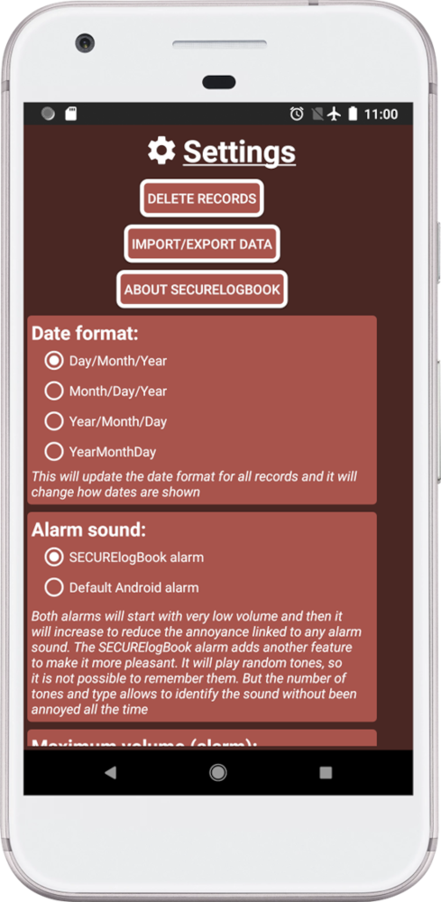
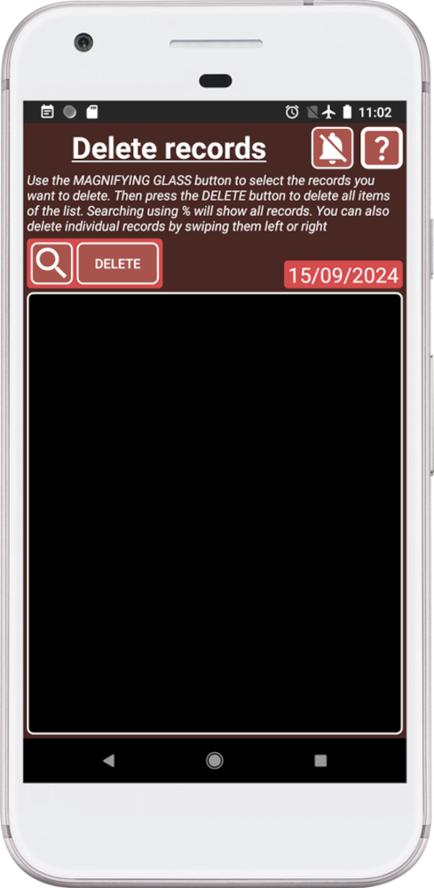
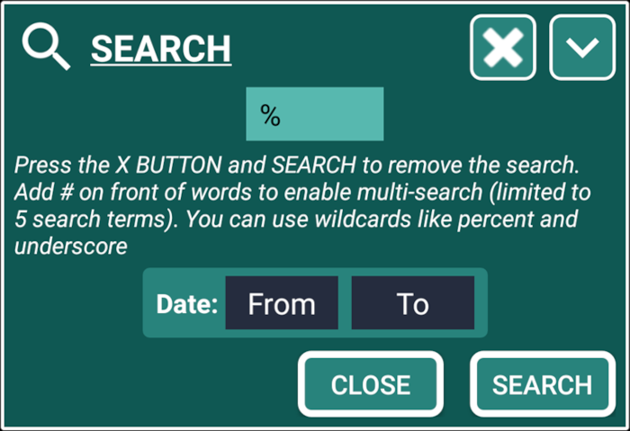
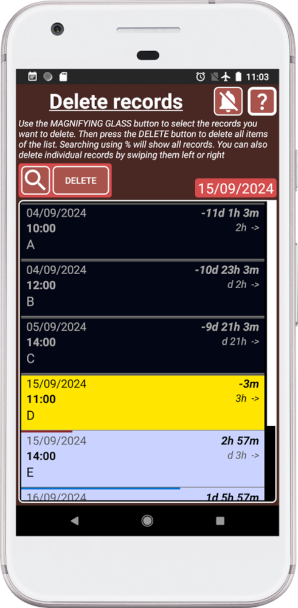
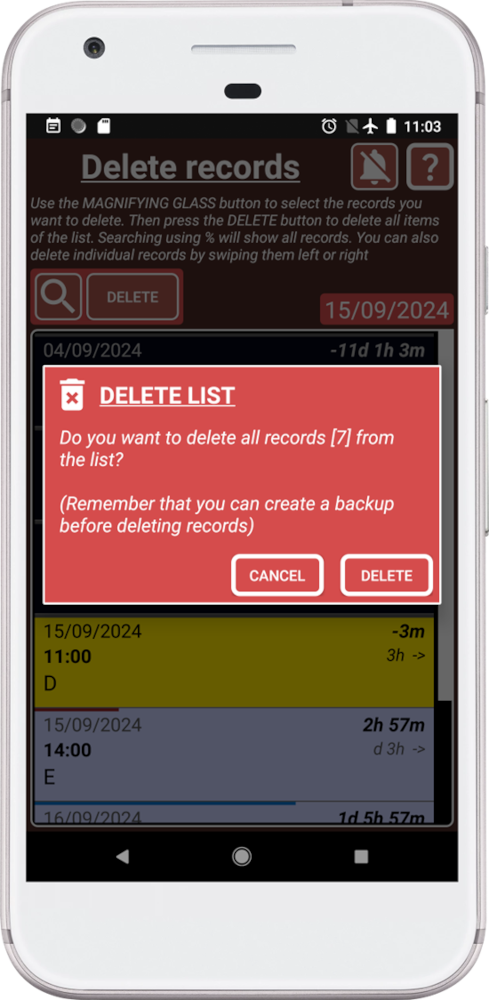
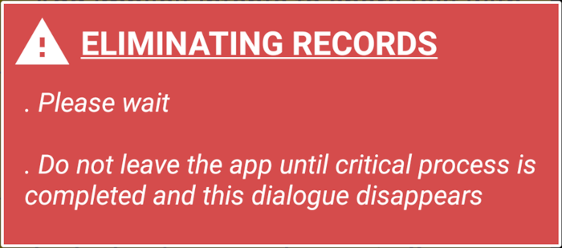

How it works?
The delete system works in two steps:
1. Use the search system to add what you want to delete to the list.
2. Delete all records pressing DELETE button or swipe them to delete individual records.
To prevent accidental deletion, the list is empty when we open the window.
Once a record is deleted it cannot be recovered.
It is recommended to do a backup before deleting records.
How to delete records?
1. Press

2. Press DELETE RECORDS button.
Now you will see the dedicated window to delete records:

This window will allow you to use the search system to delete all the records inside the list or, swipe records individual records left or right to delete them.
To prevent accidental deletion, the list is empty when we open the window.
3. Press the magnification glass to open the search system and search for %:

In this case we are searching for %, that means that we want to add all the records:

The search system is powerful and easy to use, so you can find anything quickly and delete it.
Start with a broad search to get an overview of the information available. Remember, “Less is more!”, use fewer keywords to cast more results. Once you have a better understanding of what you’re looking for, use more specific keywords to narrow down your search and find exactly what you need.
Once there are records in the list, you can delete them by swiping left or right. Or you can press the DELETE button to delete everything inside the list.
4. Press DELETE button to delete everything inside the list:

Remember, once a record is deleted it cannot be recovered.
5. Press DELETE button to delete all the records inside the list. SECURElogBook will display this message while it deletes the information.
